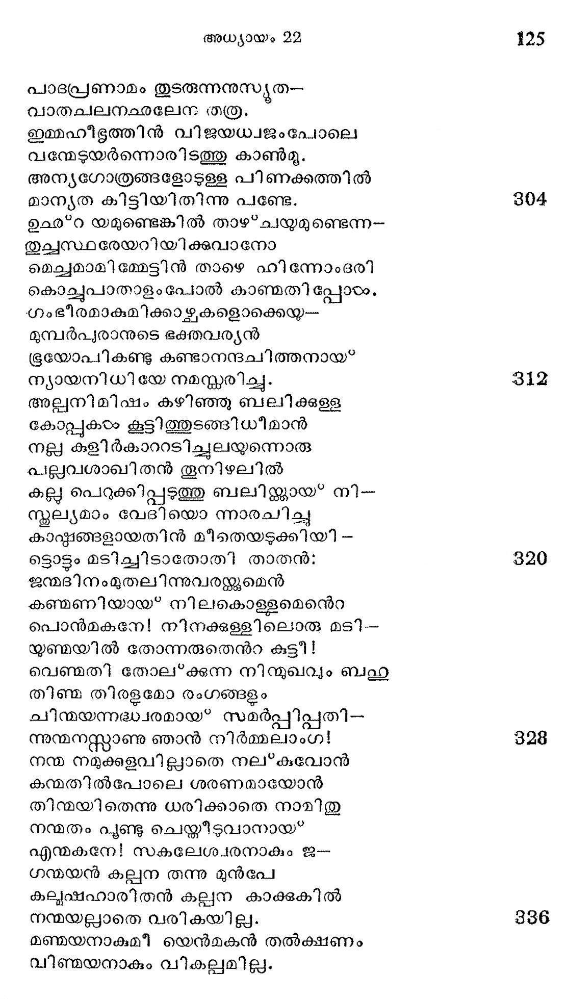

അധ്യായം 22
അബ്രഹാമിനന്െറ കുമാരയജ്ഞം
അക്കാല മീശ്വരന് സ്വാരാധേ ഭനായോ--
രബ്രഹാം തന്നുടെ നേര്ക്കണറ്റും
നിഷ്കല്യഷമായ ഭക്തി വിശ്വാസവും
നിീഷ്*കാമബുദ്ധിയം വ്യക്തമാക്കി
ഇക്ഷിതി വാസികരംക്കൊക്കെയും മാതൃകാ-
ശിക്ഷണമേകി നടത്തുവാനും,
ഭക്തസ്രമാടംപദം നല്കിയ സ്റ്റിദ്ധന്നു
ദൂര്ദ്ധാഭി ഷേകം കഴിപ്പതിന്നും,
നിശ്ചയിച്ചന്യാദ്ദശമാം പരീക്ഷണ--
പദ്ധതിയൊന്നു മനക്കുരുന്നില്
രൂപീകരിച്ചബ്രഹാമോടൊരു നാളില്
താപാപഹന് ടദേവനോതിയേവം:
ഭക്തവരേണ്യ! നീയെത്ര നാളണ്ടെനി--
ക്കുത്തമ ജന്തുനിഹതി മൂലം
അഭ്ധ്വരം ചെയ്യുന്നുവെങ്കില മതൃത്ഥ--
തൃപ്തഴിയെനിക്കുള വാംവിധത്തില്
മറൊരു യജ്ഞംകഴിപ്പതിനുണ്ടതു
തെററു കൂടാതെ ചെയ്തീടണം നീ.
പ്രാണതുല്യം ഭവാന് സ്നേഹിച്ചിടുന്ന നിന്
പ്രേമനിധിയാകു മേകപത്രന്
ഇസ*ഹകനേയുടന് കൂട്ടി നീ മോറിയാ
വിശ്രതാഭിഖ്യമാം ദിക്കിലെത്തി
തദ്ദേശപല്യത ശൃംഗത്തിലൊന്നില് ഞാന്
നിര്ദ്ദേശിക്കുന്നോ ജയി
പൂര്ണ്ണയാഗാര്പ്പണം ചെയ*കവനേ യെന്നാല്
തൂര്ണ്ണം പ്രസന്നനായ തീർന്നിടും ഞാന്.
ഉല്പംഘ്യമല്ലാത്തൊരി ശോക്തിയിങ്ങനെ
ചൊല്ലെഴ മബ്രഹാം കേട്ടനേരം
കല്ലപോല് നിന്നുപോയ വല്ലതും മിണ്ടുവാ-
നൊല്ലാതെ വന്നകതാര് തുടിപ്പാല്.
ആജ്ഞാകരനീശ നന്തര്ഹിതനായി
പ്രാജ്ഞനാം ഭക്തനും ചിന്തചെയ്ത:
പണ്ടെങ്ങും നല്കിയിട്ടില്ലാത്ത കല്ലന-
യണ്ടാകുവാനുള്ള ബന്ധമെന്തോ ?
നാഥനേക്കാളമെന് പൈതലിനേ പ്രേമ-
സാധനമാക്കി ഞാന് വയ്ക്കുകയോ,
ബാലകളേ ബരകോമളിമാവ്ി നാല്
ചാലിതചിത്തനായ* ത്തീരുകയോ,
കൂട്ടിയുണ്ടായ പിന് വീട്ടുകാരിക്കു തന്
സ്രഷ്ഷാവില് സ്ലേഹം കുറയുകയോ,
തള്ളയാം ഹാഗറേ പുത്രസമേതയായ*
തള്ളിയ ദുഷ്*കൃതം വാജട്കുകയോ,
എന്തുതാനീവിധം ദേവനരുളവാന്
ബന്ധമെന്നുള്ള തറിഞ്ഞതില്ല.
ബാല്യാല്പ്രഭതി ഞാന് സേവിച്ചുപോരുന്ന
കല്യാണദായകനാകുമെനെറ
വല്ഭന്മേലള്ള പ്രേമം കുറയ്ക്കുന്ന
ചെല്ലമാണെനന്െറ യീപ്പൈതലെങ്കില്
തെല്ലുമേ വേണ്ടെനിക്കാത്മജനഗ്നിയില്
കില്ലകന്നിട്ട കളഞ്ഞിടാം ഞാന്.
നല്ലൊരു തങ്കമുപേക്ഷിച്ചുകാരീയം
നുള്ളിയെടുക്കുന്ന മര്ത്ൃയനുണ്ടോ?
പ്രാണന്പോയാലുമെന് പ്രാണപ്രിയനായ
പ്രീണനാത്മാവിനെ ക്കൈവിടാ ഞാന്.
പുത്രകളത്രാദി ബന്ധമിബ*ഭൂമിയില്
മാത്രമേയള്ള നിനച്ചുകണ്ടാല്.
മൃത്യവിന് ഘോരമാം വായില് നിന്നാരെയും
കാത്തുകൊടംവാന് കഴിവില്ലതിന്നു.
അത്ഥാംം മൃതനെ വിടുന്നു ഗൃഹത്തില് ൮-൦
ചുററബന്ധുക്കരം കുഴിക്കല്വച്ചും
പുണ്യപാപങ്ങളെന്നുള്ളവ മാത്രമേ
പിന്നെയുംകൂടെ വരികയുള്ള.
പാസ്ഥഗണം വഴിയമ്പലത്തില് പരി-
ശ്രാന്തമായ* ചേര്ന്നു പിരിവതുപോല്
ആററിലൊഴുകും തടികടം മരക്കൊമ്പു
പററിയശേഷ മൊഴുകിടുംപോല്
വീട്ടിലെ ക്കേമമാം ജീവിതമെന്നത്ു
നാട്ടിലറിയാതോരാരുമില്ല.
ആകയാല് പത്രമടിരയാല് മത്തനായ
ലോകനാഥാംഘ്്രി ഞാന് കൈവിടില്ല.
അന്യഥാ ചിയിക്കിലീ നിയോഗമൊരു
മാന്യ പരീക്ഷണമായ* ഭവിക്കാം.
പുത്രബലിയെന്ന ചോദ്ൃപത്രത്തിനു
നിസ്ത്രപമുത്തരം നല്കമെങ്കില്
ഇത്രവലിയൊരു പ്രേമപരീക്ഷയി.--
ലെത്രയോ മേലായ* ജയിക്കാം മമ.
ലോകോത്തരമായ പ്രേമമൊഴുകുന്നോ--
രീഗതിഹീനനന്െറ ചിത്തമാകെ
മുടി കൂടാതെ പരേശസവിധത്തില്
പേടി കളഞ്ഞു തുറന്നുവയ്ക്കാം,
എന്നുമല്ലെന്െറ ഗൃഹത്തിലെഴുന്നെള്ള്
നിന്ന മഹേശ്വരന് തനെറ പാദം
മുന്നൊരു നാടം ജലംകൊണ്ടു കഴുകിയോ
രന്നിലയിങ്കലല്ലെന്െറ ചങ്കില്
ഭംഗമെന്യേ തിളയ്ക്കുന്നൊരു ചോരയാല്
തുംഗമോദം കഴുകാമെനിക്ക.
ആധിയകററുന്ന ദേവന്നുലേണ്ടി ഞാ-
നേതുതരം ത്യാഗമേലുകിലും
ആയതധികമായെന്നു വരികയി'-.
ല്ലായതന്റേഹവാനാണു ദൈവം.
ഇത്രനാടം ഞാനൊരു വിദ്യാത്ഥിയെന്നപോല്
സത്യദേവാംപ്ര്രിയാം പാഠഗേഹേ
നിതൃവും പാര്ത്തു പഠിപ്പതുണ്ടെങ്കിലും
സൃഭദ്ധിയിവന്നതിലെത്രയെന്നു
നിവ്വിവാദം ഗ്രഹിപ്പാനൊരു ഭശാധന
ഗവ്വധിയാമീ യെനിക്കെന്തവശ്യം !
ഇങ്ങിനെയൊന്നു മമാന്തരത്തിൽ ബലാൽ
പൊങ്ങിടും ചിന്താഫലമുരന്ക്കില്
ഭീമമായ്ളള പരീക്ഷണ കാരണാല്
മാമകശക്തികഠം പക്വമാകും
എന്നറിയുന്നുഞാനാകയാല് ശോധന
തന്നില് ക്കടന്നു കിടന്നിടം ഞാന്.
പൊന്നു കുഠിനതരാഗ്നിയാലല്യോ
മിന്നുന്ന തങ്കമായ*ത്തീരുന്നതും ?
ശാണമേല് ഘര്ഷണം ചെയ്യാമണി, ഘ്ൃയണി
ശ്രേണിയാല് പ്രീണനം ചെയ്തീിടുമോ?
ടങ്കദലനവിമുഖമാം കല്ലിന്നു
തങ്കവാന് സാദ്ധ്യമോ ഭിത്തിയിങ്കല് ?
എങ്കിലുമിക്കഥ മങ്കയാടം ബോധിക്കി --
ലങ്കം പൊരുവാന് മടിക്കുകില്ല.
ശംകരമിബ്ബലി പങ്കപ്ര്ൃത്തിയാ--
ലങ്കിതമാക്കാനിടവരൊളല്ലാ.
സാറയില്നിന്നിതു ഗൂഹനം ചെയ*കിലേ
സാരാധ്വരമായ* ഭവിക്കയുള്ള.
ഏവമുദിച്ച വിചാരസ്രരവന്തിയേ
കേവലം പൂര്ണ്ണവിധേയതയാം
സേതുവാല് ബന്ധിച്ചു ചൊന്നബ്രഹാം വിഭോ!
നീതനാകട്ടെ ഞാന് നിന൯്മതംപോല്.
ഇത്രയമോതിയുറങ്ങി ചരുക്കമായ*
ഹസ്തമിവര്യന് തന്െറ നിദ്രപോലെ.
പ്രത്ൃഷസ്സിന്നു ദുന്പബ്രാമെഴുന്നേററു
ഗത്യത്ഥസന്നാഹം കൂട്ടി ഭക്തന്
കൃത്തകാഷ്ടങ്ങളെ ക്കെട്ടിയെടുപ്പിച്ചു--
ഭൂത്യരില് രണ്ടാളെക്കൊണ്ടു പിന്നെ
ഗര്ഭഭസ്യോപരി കോപ്പിട്ടുപാക്ടത--
വസ്തുവാമാത്മജനോടുകൂടി
പെട്ടെന്നു യാത്ര തുടര്ന്നു പരനിയ്--
ക്തേഷ്മി നടത്തേണ്ട ദിക്കു നോക്കി.
രാത്രിയിലുണ്ടായ സംഭവമൊന്നുമേ
മാത്രവും ചൊന്നില്ലൊരുവരോടും
യാത്രക്കു കമ്പമായ* കോപ്പുകടം കൂട്ടുന്ന
മാത്രയില് കുത്രഗമിപ്പതെന്നു
വ്ൃഷ്യനായപ്പൊഴുതബ്രാം ദ്വിതീയയോ-
ടിഷ്യത്ഥമെന്നേ യുരച്ചതുള്ള.
ഗേറാറില്നിന്നവര് പ്രസ്ഥിതരായ്ശ്രമ--
മോരാതെ ശൈലങ്ങടം താഴടവരകം
വന്മരുഭൂമിക്ഠം ഘോരവിപിനങ്ങഠം
തിണ്മചേര്ഗ്രാമങ്ങളെ ന്നിവകരം
പിന്നിട്ട മൂന്നാം ദിനാന്തിമ വേളയില്
വന്നെത്തി മോരിയോപാന്തഭൂമയ.
രാത്രിയവിടെ ക്കഴിച്ചു പിറേോറദദ്ദിനം
ഭൂത്യദ്വയത്തൊടു ചൊന്നു ഭക്തന്:
നിങ്ങളിവിടെ യിരിപ്പിന് കഴുതയെ
ഭംഗിയില് സൂക്ഷിപ്പിന്; ഞങ്ങളി പ്പോരം
തുംഗതരമായ ശൈലശ്യംഗങ്ങളി --
ലെങ്ങാനുമെത്തി യഹോവയാകും
മംഗലരൂപിയാം നാഥന്നൊരു ബലി
ഭംഗ്യാ നടത്തി മടങ്ങുമത്ര.
എന്നുരച്ചാത്മജസ്തന്ധത്തി ലായധ--
ഭിന്ന സമില്ഘടയേററി വച്ചും
വഹ്നിയസിയിവ തന് കയ്യില് പേറിയം
ധന്യന് നടന്നു സ്ഥിരപ്രതിജ്ഞന്.
എന്തിന്നിളംപൈതലാകമി ബ്ബാലനെ
ദന്തുരമായ വഴിയില് ക്കൂടി
ഹന്ത! നടത്തി വശംകെടുത്തുന്നതു
പന്തിയോ ചെററ നിനച്ച കണ്ടാല്!
അഞ്ചിതമായ ശിരീഷമടി തൊഴും
പിഞ്ചിളം കാല്കൊണ്ടു കൂര്ത്തകലും
മുള്ളം ചവിട്ടവാന് സമ്മതിക്കുന്നൊര്ീ-
യുള്ളലിവില്ലാത്ത വൃദ്ധപാശന്
കാഠിന്യമേറും കരിമ്പന ഭേദിപ്പാന്
കാശകുസുമം കരത്തിലേന്തും
എന്നീവിധമാരു മോരുന്ന മട്ടില--
സ്തന്ദര ബാലകൻ പിന്തുടര്ന്നു.
തോളില് പ്പുരുത്ത വിറകുകെടാലടന്
ചുളീപ്പതുക്കെ ക്വരിച്ചു, മുഖം
കാളം ഒവയിലില് ചവംന്നിരു ചുണ്ടുകയം
കാള നിറമായ, ഉളകങ്ങളില്
മേളിക്കും സ്വദകണങ്ങയം ചെറുമുത്തു--
പാളി നിരത്തി; ലലാടദേശം,
നാളീകതുല്ൃയമാ മാനനമെന്നിവ
നീളെഘമ്മോദകക്ിന്നമായി.
ആഭോഹണ മവരോഹ മിവമൂലം
പാരം തളരുന്ന ചാരുരൂപന്
രണ്ടായിരമാണ്ടു പില്ലാഴു യൂദരിന്
ശൂഞി നിമിത്തം നിബദ്ധനായി,
കെണ്ടന് കുരിശു തന് തോളില് ചുമന്നുകൊ -
ഞണ്ടെണ്ടിശ ഭന്യമാക്കം വെയിലില്,
പണ്ടില്ലാമട്ടില് വിയര്ത്തു വലഞ്ഞതി -
കുണ്ഠബത തുിങ്ങു മുടമ്പിനോടും,
ഇണ്ടലാല് തൊണ്ടയിടറി മുറയിടും
വണ്ടാര്ക്ഴലിമാര് കൂട്ടമോടും,
കണ്ടകന്മാരുടെ മദ്ധ്യേ കലമല--
മണ്ടയിലേക്കു നടന്നു പോകും
വിണ്ടലനായക പത്രനേ യെന്മന --
അണ്ടി ലമര്ന്നിടുംതമ്പരാനേ
വേണ്ടവിധത്തിലനുസ*മരിപ്പിച്ി ൭--
ണ്ടു നിരന്തരദുഃഖദമായ*.
താതനുമാത്മജന് താനുമിതേവിധ--
മേതാന് മയില് നടന്നപ്പൊഴബ്രാം
ലോകത്രിതയമാം ശാഖിക്കു മൂലമായ"
നാകസംസ്ഥാപി തപീഠനായി;
ശോകവിമുക്തി നിജപദസേവക-
ക്കാകവേയേകം കൃപാലുവായി,
സ്വീയമനസ്സില് നിഴലിക്കമര്ശന്െറ
മായമകന്നൊരാരാധനത്തില്
നിര്ല്ലീനചിത്തനായ* കാര്യന്തരസ*ളൂതി
യെല്ലാമകുന്നു വശാവുകയാല്
ചൊന്നു കുമാരകന്: താതാ! നമുക്കൊരു
വന്തരമായ മറവിയില്ലേ?
വഹ്നി വിറ കസിയെല്പാമെടുക്കിലം
വന്ദ്യമുപാക്ൃത ജീവിയെങ്ങോ ?
ആകസ്*മികപ്രശ*നമാകുമിസ്റ്റായകം
വേഗതര മബ്രഹാമിന്നുള്ളം
പൂകിയവിടെ യുന്ന വേളയില്
ലോഹകവചപരാിസ്ൃതമാം
ഭക്തിവിശ്വാസം വിഷയവിരക്തിയെ
ന്നിത്തരം പാത്രങ്ങരം സന്ത്യജിച്ചു
ഭുഃഖപയോധിയടച്ചുവചചുളളതാ--
മക്കുതുവാകെ ത്തുളച്ചതിനാല്
ഉല്പ്പന്നമായ ജലസ്്രം കണ്വഴി
യുല്ഗമിച്ചുദ്രിക്തവേഗവത്തായ്.
വക്തവ്യമെന്തെന്നറിയാതെ യബ്രഹാ--
മിത്തിരി നേരം കുഴങ്ങുകിലം
സത്വരദുഃഖമടക്കി ത്തെളി വൊടു--
മുത്തരമിത്തരമോതിയുക്ത്യാ.
ഇല്ലായ്മയില്നിന്നു സവ്വമുളവാക്കും
വല്ഭനായ ജഗന്നിവാസന്
നല്ലോരുപാകൃതം കണ്ടിരിക്കുന്നതി-
ലൊല്ലാവിചാരം നമുക്കതെല്ലം
മോറിയാമലയില്നിന്നുള്ള പ്രകൃതിയുടെ കാഴച
ഏവംപ്രതിവചിച്ചീശ നിര്ട്ദിഷ്ടമാം
'ഗ്രാവശ്ൃയംഗത്തിന് മുകളിലെത്തി
നാനാദിഗന്തങ്ങഠം കാണ്മാന് കഴിയുന്ന
സ്ഥാനമതി ലവരേറിനിന്നു
നേത്രയയഗനൂക്ഷദദര്ശി നി മൂലമായ?
ചിത്രതരമാം പ്രകൃതിഭംഗി
വീക്ഷിച്ച പരോക്ഷ സന്തോഷ വായന്ക്കിനാല്
സാക്ഷിയാംടദേവനെ സന്തമിച്ചാര്.
പച്ചനിറമാണ്ട പുല്മാലികളതി
സ്വച്ഛമാം രമ്ൃയജലാശയങ്ങംം,
കച്ഛപ്രദേശങ്ങഠം, മഞ്ഞാല് വിളര്ത്തുള്ളോ--
രൂുഛ*റിതശ്ുംഗശി ലോച്ചയങ്ങരം,
മുന്തിരിവള്ളി ചുഴലപ്പടര്ന്നുള്ള
ചന്തമെഴുന്ന കൃഷി സ്ഥലങ്ങരം,
നീലനിറമാളം സ്നേഹഫലങ്ങളെ
നീലപലാശനികരമധ്യേ
പേറിവിളങ്ങു മൊലിവുമരങ്ങളാല്
പുരിതമായ ഗിരിതടങ്ങഠം,
സ്വാദുകൊണ്ടാരു മിളന്ക്കാതെ തിന്നിടും
മാധുഭ്യമേന്തും ഫലംനിറഞ്ഞ
ഒടദുംബരവന പൂര്ണ്ണപ്രദേശങ്ങഠം,
ഗോതമ്പുതിങ്ങും വയൽനി രകരം,
ചെന്പുനിറഞ്ഞെങ്ങും കാന്തിപരത്തിയം
പൊന്പഴം കൊമ്പില് നിറച്ചണിഞ്ഞും
വിള്ളന്ന തൊണ്ടാല് വിളങ്ങുമാ മാണിക്ൃ--
ക്കലണിമാല കഴുത്തിലാര്ന്നും
കാററിലുലഞ്ഞു കളിയാടി ക്കണ്ണിണ
യോററം കുളര്പ്പിചും സല്ഫലത്താല്
രമൃശുകങ്ങഠംക്കശന മരുളിയും
തിമൃത്തടത്തില് ജലംകൊടുത്തും
മാതള വൃക്ഷങ്ങഠം തിങ്ങിവളരുന്ന
സ്റ്റീതാഭമാക മുപവനങ്ങരം,
പന്തിയില് നട്ട നനച്ചുവളക്കയാല്
ചിന്താതിഗമായ പുഷ്മഷിയോടെ
ഹന്ത! തഴച്ചു സുമങ്ടഠം വികസിച്ചു
ബന്ധുരശോഭ പെരുക്കിനിള്ലെ
മസ്ഥരനായൊരു വാതമടുത്തുസ--
ഗന്ധമെടുത്തു പരത്തിയെങ്ങും
അന്തരീക്ഷം പരിപൂതമാക്കം ബളഥ
ചന്തമെഴുന്ന പൂങ്കാവനങ്ങരം,
കര്പ്പൂ രവ്ൃക്ഷങ്ങഠം കാട്ടത്തികാരകി --
ലല്ലേതരസുരദാരുവ്ൃക്ഷം
മററു പലമരം തിങ്ങിവളരുന്നോ--
രററമില്ലാതുള്ള കാനനങ്ങയം,
സ്വര്ണ്ണമുരുക്കിപ്പകര്ന്നുള്ള മാതിരി
ചണ്ഡാംശുരശ*മി തിളങ്ങിമുററും
കണ്ണുകളഞ്ചും വിധത്തില് വിളങ്ങുന്ന--
മുണ്ഡശിരസ്റെഴ മൂഷരങ്ങരം,
ശ്രീലതരമായ വ്യയോമകടാഹമാം
നീലാതപത്രമതിന്നു കീഴില്
ചാലേ നിലകൊണ്ടു കണ്ടുമോദാളഉത--
മോലും മനസ്സോടിക്കാഴ്ചയെല്ലാം.
ഭൂതലഭൂഷയാം പണമൂഫലസ്ഥാന**--
ഭൂവിന്നുഭൂതിദമാം വിധത്തില്
പശ്ചിമഭാഗത്തു നീണ്ടു കിടക്കുമ--
പശ്ചിമപന്യതപങ*ക്തിയുടെ
ജിീഹ്വയെന്നോരും വിധത്തില് വിളങ്ങുന്നീ
ബഹ്വനുമോദിതശുംഗഭാഗം.
ഉണ്ടര്ണ്ണവനിരപ്പില് നിന്നിതിന്നൊരു
രണ്ടായിരമടി പൊക്കമോര്ത്താൽ.
ഇത്രയമമുചനിലയില് നിന്നീശന്ന്െറ
വിസ*തൃതചിത്രകലാവിലാസം
ഭിത്തമായെങ്കിലും കാണ്മതിന്നീദ്ദശം
ലബ്ദമാം ഭാഗ്യമനര്ഘമെന്നു
പുത്രനും താതനും തോന്നിയഖിലേശ--
പത്തനുവേലം വണങ്ങിനിന്നാര്.
തെക്കും കിഴക്കുമുദഗ്രതരമായ
നല്ക്കിടങ്ങെന്നപോല് യോശഫാത്താം
പ്രസ്ഥം കിടക്കുന്നു മോര്യശൈലത്തിനു
നിതൃപദസേവ ചെയ്ത തന്നെ.
ഇസ്്റാനുവിന്നെഴം ഭംഗി ശതഗുണ--
മസ്സലായ്കൂട്ടംപടിയടുത്ത
കിദ്രോന് സ്രവന്തിതന് വെള്ളിക്കഴല്വഴി
യുദ്വമിപ്പിക്കും മധുരഗാനം
പുണ്യാദ്രിയാമിതിന് മാഹാത്മ്ൃയമോരോന്നു
വര്ണ്ണനം ചെയ്യുന്നുവെന്നു തോന്നും.
താഴ*വര ചൂഴും തരുക്കളിഗ്ഗീതിയാല്
താഴ്മയില് ശീര്ഷം കുനിച്ചുകൊണ്ടു
പാദപ്രണാമം തുടരുന്നനുസ്യൂത--
വാതചലനകഛലേന തത്ര.
ഇമ്മഹീഭൃത്തിന് വിജയധ്വജംപോലെ
വന്മേടുയര്ന്നൊരിടത്തു കാണ്മു.
അന്യഗോത്രങ്ങളോടുള്ള പിണക്കത്തിൽ
മാന്യത കിട്ടിയിതിന്നു പണ്ടേ.
ഉഛ*റ യമുണ്ടെങ്കില് താഴ*ചയുമുണ്ടെന്ന--
തുച്സ്ഥരേയറിയിക്കുവാനോ
മെച്ചമാമിമ്മേടിന് താഴെ ഹിന്നോംഭരി
കൊച്ചുപാതാളംപോല് കാണ്മതി പ്പോഴം.
ഗംഭീരമാകുമിക്കാഴ്ചകളൊക്കെയ-
മു്പര്പ്രരാനുടെ ഭക്തവര്യന്
ഭൂരയോപികണ്ടു കണ്ടാനന്ദചിത്തനായ?
ന്യായനിധിയേ നമസ്കരിച്ച്.
അല്ലനിമിഷം കഴിഞ്ഞു ബലിക്കുളള
കോപ്പകടം കൂട്ടി ആടങ്ങിധീമാന്
നല്ല കുളിര്കാററടിച്ചുലയ്ന്നൊരു
പല്ലവശാഖിതന് തൂനിഴലില്
കല്ല പെറുക്കിപ്പടത്തു ബലിക്ക്കായ* നി--
സ്കൂല്യമാം വേദിയൊ ന്നാരചിച്ചു
കാഷ്ഠങ്ങളായതിന് മീകതെയടുക്കിയി -
ട്ടൊട്ടം മടിചചിടാതോതി താതന്:
ഭന്മദിനംമുതലിന്നുവരള്ുമെന്
കണ്മണിയായ* നിലകൊള്ളമെന്െറ
പൊന്മകനേ! നിനക്കള്ളിലൊരു മടി --
യുണ്മയില് തോന്നരുതെന്റ കുട്ടീ!
വെണ്മതി തോല്ക്കുന്ന നിന്ദുഖവും ബഹു
തിണ്ജ തിരളമോ രംഗങ്ങളം
ചിന്മയന്നദ്ധ്വരമായ* സമര്പ്പിപ്പതി--
ന്നുന്മനസ്ത്കാണു ഞാന് നിര്മ്മലാംഗ!
നന്മ നമുക്കളവില്ലാതെ നല*കുവോന്
കന്മതില്പോലെ ശരണമായോന്
തിന്മയിതെന്നു ധരിക്കാതെ നാമിതു
നന്മതം ചൂണ്ടു ചെയ്തീടുവാനായ*
എന്മകനേ! സകലേശഥരനാകും ജ--
ഗന്മയന് കല്പന തന്നു മുന്പേ
കല്ുഷഹാരിതന് കല്പന കാക്കുകില്
നന്മയല്ലാതെ വരികയില്ല.
മഞ്മയനാകുമീ യെന്മകന് തല്ക്ഷണം
വിണഞ്ജയനാകും വികല്വമില്ല.

തണ്മയിതിനാല് നിനക്കു വരികില്ല
തഞ്മമനസ്തിന്നുളാമെനിക്കും
ഷണ്മാസം ചെന്നാലും ഷട*ശരത്തായാലും
കാണ്മൂ മരണ ഭരണമൊപ്പം.
നെന്മണിയോളമോ എണ്മണിയോളമോ
പൊന്മണീ ! വേണ്ടാ മഭൃതിഭയം തേ
പെണഞ്മണിയാകും നിന്നമ്മ മനോടുഃഖം
പുണ്മതുണ്ടെന്നും നിനയ്ക്കുവേണ്ടാ.
ഏവം ജനയിതൃവാചമനുശ്രവി--
ച്വാവല്കൂടാതെ സുതനും ചൊന്നാൻ:
എന് പ്രിയ താതാ! നിന് കമ്പിതമാം മൊഴി-
യിന്പമായ*ത്തോന്നുന്നിനിക്കതെന്യേ
സംഭ്രമബദ്ധിയുണ്ടാകുന്നില്ലല്വും
ഡംഭമുരത്ത്ക്യല്െെന് പിതാവേ!
തമ്പരാന് തന്െറ യനുജ്ഞയുണ്ടാവുകില്
വന്പരവള്ക്കുകത്താഴുവാനോ,
മാണ്പെഴമഗ്നിയില് വീഴവാനോ, ജന-
പ്പൂണ്പേയെനിയ്ക്കു മടിയില്ലൊട്ടും.
വന്പു നടിച്ചു വന്ഭക്ത രെന്നാഡ്യത
യമ്പിയിരിതകുകില് ശ്രൈഷ്മ്യമെന്തോ?
തുന്പം വരുമ്പൊഴു തല്ലേതല്സ്വാമിയി -
ലന്പു കാട്ടേണ്ടതനുചരന്മാര്
മുമ്പിനാല്തന്നെ യറിഞ്ഞിരിക്കുന്നു ഞാന്
ശമ്പാസമാനമായ* ഭോഗമെല്ലാം.
കമ്പമില്ലാകയാല് മൂത്യവിഷയമായ*
മുന്പേ മരണം നുഖജനകം.
വെമ്പല്നിറഞ്ഞ വിഷയം വൊടിഞ്ഞു ഞാ-
നുബര്പദം കടന്നീടുമെങ്കില്
പിന്പിലെറിയാം സമന്വയവും; ഹാ! വിഷ-
കുംഭമാണല്ലോ വിഷയജാലം
വമ്പുലിവായിലിരിപ്പുവന്നങ്ങൊരു
പമ്പരം വേണോ കളിപ്പതിന്നു?
അന്പോടാരെങ്കിലും വന്നുവി മോചിക്കി--
ലിന്പമായ* സ്വാഗതമോതുമവന്.
പൊന്പടലംകൊണ്ട മേഞ്ഞൊരു സാധവും
മണ്പുരയും സമം സംയമിക്ക.
കാമ്പെഴുമിത്തത്വം താവകസൂക്തിയിന്
മാണ്പുകൊണ്ടെന്െറ മനസ്സിലുണ്ട്.
ചാമ്പതന് കായ*പോല് മിന൯ുത്തൊരീ വിഗ്രഹം
ചാമ്പലായ ത്തീരുമൊരിക്കലതാൽ
നമ്പിയിരിക്കമധീശന്നുവേണ്ടീട്ട
ചാമ്പലാകുട്ടടനിബ്ബലിയില്.
എന്പുരാനേ! തവ പാടദത്തിലെന്നുടെ
ചമ്പയാം ദേഹമുപാകൃതമായ*
സമ്പന്നമാക്കിത്തരുന്നു ദഹിക്കുവാന്
കുമ്പിടുന്നേന് പരിപാഹി! പാഹി 1
ഈടദൂശം ചൊന്നു തന് താതനോടുചിവാ--
നേതും മടിചിടാതെന് ശരീരം
സ്റ്റീതമായ* ഖണ്ഡിച്ചു കട്ടയില്വച്ചുടന്
ഹേതിയ്ക്കിരയാക്കി ക്കൊടംക താതാ!
അച്ഛന് പറഞ്ഞുടന് : കുഞ്ഞേ! നിനക്കിത്ര
നിശ്ചയബദ്ധിയെന്തുത്ഭവിപ്പാന് ?
ചൊന്നു കുമാരകന്?: ടദൈവപ്പരതിജ്ഞയെന്
മന്ദമായ്ള്ള മനസ്സി ലണ്ടു-.
സവ്യശക്തന് പിതാവോട ചൊന്നുളെളാരു
ഗുവ്വികളാകിയ ഗീരഖിലം
ഇസ്സഹനില് തവവംശം സ്ഥിരപ്പെടും
ശാശ്വതദായമായിക്കനാനേ
നിന്നനുഗാമികാം കൈവശമാക്കി ടു--
മെന്നുള്ള ദിവ്യനിയമസാരം
എന്നകതാരിലചാല്യമാം സ്ഥാണുപ്ോ-
ലന്നേയ്യറച്ചു കീപ്പതുണ്ടു്.
യജ്ഞീയവേടിയില് ചാരമാകുന്നു ഞാന്
പ്രജ്ഞയോടെയൊരുനാളണര്ന്നു
നാടുമുഴുവനടക്കുമെന്നെന്നുടെ
ഗൂഡചൈതന്യമുരന്കകതുണ്ടു”.
ഭന്യമായ* തീരുമൊരെന്നുടലിന്നണു
ശുഷ്മയാലെങ്ങി നെ നഷ്ടമാകും?
നിതൃചൈതന്യമാമീശപദാബ*ജത്തി--
ലര്പ്പിച്ചതേതും നശിക്കയില്ല.
ധാന്യമണി ചെളി തന്നിലെറികിലും
മാന്യമാമായതു നിവ്വിളംബം
നൂതനദേഹം ധരിച്ചു ശതഗുണ
സ്റ്റീതമണികളായ*ത്തിരുന്നില്ലേ?
ക്ഷീ ണഹ്ൃദയത്തിന്നാശയ്ും ധൈര്യവും
കാണിയും തെററാതരുളിടുന്ന
വാണികളിസ്റ്റഫനീവിധം ചൊന്നതു
വീണുജനക മനസ്സി ലതാല്
താണുവിഷമവിചാരപരമ്പര
വേണുന്ന ദാര്ഡ്്യം കരടംക്കുദിച്ചു.
പ്രാണാധികപ്രിയമേറുന്ന പുത്രനെ
നാണാതെ വേദിയില് വച്ചറുത്തു
ക്ഷോണീശന്നേകബലിയാക്കിലുമതു
പാണിയിലീശന് ഗ്രഹിച്ചവന്െറ
പ്രാണങ്ങളേപ്പുനഃസ്ഥാപിക്കുമെന്നുള്ള
ചേണാര്ന്നതത്വത്തില് വിശ്വസിച്ച.
പുനുരത്ഥാനോപദേശം
നൈകസഹസ്രരസംവത്സരാനന്തരം
“ലോകസമക്ഷമവതരിച്ച
ശോകവിമാഥിയാം യേശുഭഗവാനും
പാകമനസ്താരം പ്രേഷിതരും
ആകമാനം ഭവി വാദിച്ചുറ്പിച്ച
ശ്രീകരമായ പുനര്ഭവത്തിന്,
കാകളീനാദംപോല് ശ്രാവ്യമായ്യള്ളോരു
രോകരഹിത ദിവ്യോപദേശം
ചൂവ്വികരാമിവര്ക്കന്തര്ഭവിച്ചതു
നിവ്വിവാദം ബഹു വിസ്മയം താന്.
ഈജിപ്യറാബിവിഷയനിവാസി ക-
കീജിത്വരമതം കൊണ്ടിരുന്ന
ചിഹഛ്നങ്ങഠം കാഞ്ചതിന്നുണ്ടിന്നു മീവിധ-
മന്യജനപടദവാസികളും
മുവായിരം സമതീരുന്ന വാസരം
ജീവന് തിരികെ സ്വദേഹമതില്
വന്നു ചേര്ന്നിടുമെന്നുള്ള വിചാരത്താല്
ഗണ്യത നല്കി ശവശരീരം
തൈലാഭിലേപത്താല് നിര്ട്ദ ഷൂമാംവിധം
പാലിച്ചുപോന്നിജിപ്പെന്ന ദിക്കില്
മൃത്യു, തദുത്ഥാന, മെന്നിപ്പദമവര്
ക്ഷേത്രമുകപ്പില് കുറിച്ചിരുന്നു.
നിഗശ്ലേഷനാശത്തില് നിന്നൊരു ജന്മിയെ
ശാശ്വതജീവനിധാനമാകും
ഈശ്വരന്നുല്ഭൂതമാക്കാന് കഴിവില്ലെ--
ന്നാസ്മറികര്ക്കെങ്ങിനെ വിശ്വസിക്കാം?
നക്ഷത്രമത്സ്യമെന്നുള്ളൊരു ജീവിയെ
കഴക്ഷേയകംകൊണ്ടനേകമായി
ഖണ്ഡിച്ചു വെയ്്കിലുമോരോ ശകലവും
തിണ്ണെന്നു ജീവികളായ ഭവിക്കും.
പട്ടപ്പുഴുക്കാം പുഴുക്കൂട്ടില് ചത്തൊരു
൭ട്ടില്ക്കിടന്നു കുറേക്കഴിയെ
പെട്ടെന്നൊരു ശലഭാക്ടതിയില് പക്ഷം
തട്ടിപ്പറപ്പതു കാണ്ജതില്ലേ?
മമ്മിപൊതിഞ്ഞവസനത്തില് നിന്നിഹ
സമ്മദാല് കണ്ടെടുത്തുള്ളതാകും
രണ്ടായിരം കൊല്ലം പ്രാചീനതയുളള
മാണ്ടതരം വിത്തിന്നിണ്ടകളെ
വീണ്ടുമെടുത്തു നിലത്തു വിതയ്ക്കുവേ
കണ്ടാലഴകള്ള പൂക്കളേന്തും
പുണ്ടുകളന്പതു മൊന്പതും വര്ഗ്ഗമായ*
വേണ്ടുവോളം ഭവി കണ്ടിടുന്നു.
ഹ്രിയാന് കൈസറിന് വാഴചയിലുള്ളൊരു
ഭദ്രനാണ്യങ്ങളോടൊന്നു ചേര്ന്നു
ഭൂനിരപ്പില്നിന്നൊരന്പതടിയടി
ഇാണ്ടു കിടന്ന ഫലമണിയാം
*റാസ്റി ?* വിത്തുകടം മണ്ണില് വിതച്ചപോ
തത്രയ്യം ഭംഗ്യാ കിളര്ത്തുവന്നു.
അന്യദാ സാഗരതീരമതിൽ നിന്നൊ-
രന്പതു മൈലകന്നുടംപ്രദേശം
അന്ധുവിന്നായിക്കഴിച്ചി രുപത്തടി
സന്ധിയിലെത്തിയെടുത്ത മൃത്സനാ
ഭൂതലത്തിട്ടൊരു നേരം കിളര്ത്തവ
യാദസ്്റതിതീരദ്രക്കളായി.
ഭൂരിസഹസ്രരം സമകടംക്ക് മുന്പബ്ബി -
തീരമായ*മേവി യോരസ്ഥലത്തു
വീണുള്ള ശാഖി ഫലങ്ങളിഗ*ഘട്ടം നി-
ദ്രാണനിലയീന്നുണര്ന്നി വണ്ണം.
ഏവം പ്രകൃതിയിലത്ഭുതമാംവിധം
ജീവനരുളം ജഗന്നിവാസന്
പാവനാത്മക്കളാം ഭക്തക്ക ശാശ്വത -
ജീവനമേകുകയില്ലയെന്നോ?
ദ്രാവകമൊന്നില് പതിച്ചു ലയിച്ചൊരു
ലോഹ മിതരദ്രവക്കലര്പ്പാല്
ചേതമെന്യേ സമാവിര്ഭവിപ്പിക്കുന്ന
രാസയോഗജ്ഞവിദഗ്ധതപോല്
ഇല്ലായ*മയില് നിജശക്തി പകര്ന്നിട്ട
നല്ലോരു ജീവനരുളം ദേവന്
വല്ലഭനല്ലയോ മൂത്യംഗതരാം തന്
വല്ലഭമക്കളേ യുത്ഥാപിലപ്പാന് ?
സ്വര്ല്ലോകജീവനപീയുഷപായികരം-
ക്കല്ലലളവാകില്ലൊന്നിനാലും.
വാളകാംക്കൊന്നുമേ ഛകേരദിപ്പാന് മേലല്ലോ
കാളന്ന തീജ്ക്കും ഭഹിച്ചുകൂടാ.
വെള്ളത്തിനൊട്ടം നനയ്ക്കാന് കഴിവില്ല
തെല്ലലരത്തീടില്ലാ ശൃഷ്കാവാതം.
അകേരദൃമായ്യ മദാഹ്യമായ്ം പര-
മാക്ലേദ്യമായ്യ മശോഷംപകൂമായ്യം
നിതൃമായ* സവ്യഗതമായ* സ്ഥിരമായി
വൃത്യയമെന്യേ യചാല്യമായും
സംസ്ഥിതി ചെയ്യന്ന ജീവനാണാത്മിക --
സത്വവത്തുക്കയംക്കു ലബ്ദമി പ്പോരം.
ഇപ്പാരിതോഷികലബ്ദിയാല് ധന്യനാ-
മിസ്സ്റഹന് തന്െറ ബലിമരണം.
നിശ്ശേഷനാശമല്ലെന്നും പുനജ്ജീവ--
നസ്ലായ* പൃത്രന്നു കിട്ടുമെന്നും
വിശവാസമുളളിലദിച്ച തെളികയാല്
വിശ്വാസവീരന് തിരഹപ്ൃരൂന്
സചീയശരീര മുപാകൃതമാക്കിീടു
മേകനുതനേ വരിഞ്ഞുകെട്ടി
അദ്ധ്വരവേദിയിൽല് വച്ചിട്ടറുക്കവാന്
കത്തിയെടുത്തു പിടിച്ചുടനേ
ഉചൈ്ചൈന്യരമായ ശബ്ദമൊന്നുണ്ടായി
സ്വച്ഛവിഹായഃ പഥത്തിലപ്പോരം.
അബ്രഹാം കേട്ട തിരിഞ്ഞൊരു വേളയില്
ശുഭ്രാംഗനാമൊരു ഭൂതനോതി
പ്രര്രനെ യാതൊന്നും ചെയ്യരുതിത്രയ്യം
മാത്രമേ വേണ്ടു; ഭവന്മനസ്സില്
ശ്രദ്ധയും ഭക്തിയും വ്യക്തമായിട്ട ഞാ-
നിത്തവ്വില് ബോധ്യപ്പെടും വിധമായ്.
സന്താനശൂന്യത ലേശം ഗണിക്കാതെ-
യെന് തോഷമാത്രസ*പ്പഹ നിമിത്തം
നീ കഴിപ്പാനായ* ത്തുടങ്ങിയൊരിബ്ബുലി
സാകൂത മംഗീകരിച്ചു കൊണ്ടേന്.
ഭക്താഗ്രഗണ്യനും കൃത്യനിരതനും
തൃക്തവിഷയസ*പ്പഹനുമായ
അബ്രഹാമിക്ശബും പുത്രവിമോക്ഷത്താ--
ലുടംപ്രമോദപ്രദമെന്നതേക്കാരം
യാഹ്വയിന് യാഗസമര്പ്പണത്തിന്നു പ്ര--
തൃയൂഹമായത്രേ ഗണിച്തുള്ളില്
അന്യവിചാര മകന്നോരു ഭക്തന്ന--
നന്യഭജനമേ ജീവിതാത്ഥം.
ഏവം നിരദ്ധമഖനാക മബ്രഹാം
കൈവന്നവാഞ്ചരാവിഹതിമുൂലം
താപമനസ്സെൊടു പിന്നില് നോക്കീടവേ
മേഷമൊന്നുണ്ടൊരു വള്ളിതണിൽല്
കൊമ്പ കുരുങ്ങിക്കി ടക്കുന്നു സന്തോഷ--
സംഭ്ൂമത്തോ ടവിടെത്തിയബ്രാം
ആടിനെ മോചിച്ചു കൊണ്ടുഖന്നദ്ധ്വര--
വേദിയില്വച്ഛു ബലികഴിച്ചു.
കുത്രാസ്മറി മേഷമെന്നോമല്കുമാരക--
നദ്ധ്വാവില് വച്ചനുയോഗിക്കുമ്പോഠം
അസ്മല് കുലദൈവം സന്നദ്ധമാക്കമെ---
നനസ*മയമോതിയ നൈജവാകൃം
സാഫല)വധ്യവത്തായി ത്തീരുകമുൂലമാ
യാശിഖരിക്കവന് *യാ?ധരത്തില്
കാണപ്പെടു മിദമത്ഥമിയലുന്ന
*യാഫഹ്വയിരോ യെന്നു പേര്കൊടുത്തു.
ഭുതന് പുനശ്ച വിളിച്ചബ്രഹാമിനെ
സാദരമാശിസ്റ്റിനാല് നിറച്ച.
മേദുരമോദ മവനുമാ മോറിയാ--
മേദിനിവിട്ട വിനിറ്റ്ുമിച്ചു.
ഏററം വിഷമമാ പ്രശ*നപങ്*ക്തിക്കൊരു
തൊറ്ും പിണയാതു ളുളത്തരങ്ങരം
ഉയററമാംവണ്ണമെഴുതി പ്പരീക്ഷണ--
വീട്ടിനെ വിട്ട സഖേന പോകും
കുട്ടികരംക്കുള്ള മനശ്ശൂമവും ജയം
കിട്ടുമെന്നുള്ള ദൂഡമനസ്സം
ദൈവസഹായത്തെ യോര്ത്തുള്ള നന്ദിയ്യം
ഭവൃമാംവണ്ണം കലര്ന്നു ഭക്തന്
കാലദേശാദി കളൊന്നു മറിയാതെ
പാലകന് പാദം ഭജിച്ചു തന്നേ.
ചേടകപുത്ര സമന്വിതം വീട്ടിന്നു
പേടികൂടാതെ മടങ്ങിയെത്തി.
ബേര്ശേബായെന്നുള്ള സംവസഥത്തിലീ
ഹര്ഷമനസ്തന് ചിരം വസിച്ച.
നാഹോറിന്െറ വംശാവലി
അക്കാലം ഹാറാനിൽല് താമസിക്കുന്നൊരു
സ്വഭ്രാതാവാകിയ നാഹോറിന്നു
മില്ക്കയില്നിന്നു തനയര് ജനിച്ചതാ-
യബ്രഹാംകേട്ടു സമ്മോടമാര്ന്നു.
ഉയ്തൊടു ബുസും ക്ൌമുവേല് കേസെട*ഹസോ
വില്ദാശ* യിഭലാവും ബേരൂവേലും
ഇങ്ങിനെയെട്ടുപേരാണവര് പെപ്പാട്ടി
തന്മക്കളായിതേബാഹു ഗാഹാം
നാഹും മഃടഖായ്ും ജാതമായ* നാലുപേര്
മാതാവിന് പേരോ രയ്ലമയത്രെം.